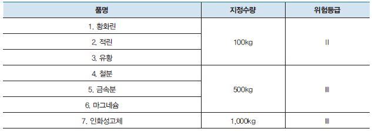

2류 위험물은 가연성 고체로, 황화린, 적린, 유황, 철분, 마그네슘, 인화성 고체(고형 알코올 및 인화성이 40°C미만, 1,000kg)가 있다. 낮은 온도에서 쉽게 착화되는 가연성 고체가 주를 이루며 연소속도가 빠르고 연소 시 유독가스를 발생시킨다. 산화제와의 접촉, 마찰 등에 의한 급격한 연소의 우려가 있다.

가연성 고체로서 비교적 낮은 온도에서 착화되기 쉽다. 모두 산소를 함유하고 있지 않은 강한 환원성 물질이다. 산화제와 접촉하면 마찰 또는 충격으로 급격하게 폭발할 수 있는 가연성질이다, 연소시 연소속도가 매우 빠르고 연소열이 크다. 금속분류, 철분, 마그네슘은 물과 반응하여 수소가스를 발생시키고 묽은과 접촉에 의해 수소가스를 발생시킨다.
화재시 유독성 가스를 많이 발생시킨다. 비교적 저온에서 발화가 용이하며 다량의 열과 빛을 낸다. 금속분은 습기접촉할 때 조건이 맞으면 자연발화의 위험이 있다. 금속분, 유황가루 ,철분은 밀폐된 공간 내에서 점화원이 있으면 분진폭발일으킨다.